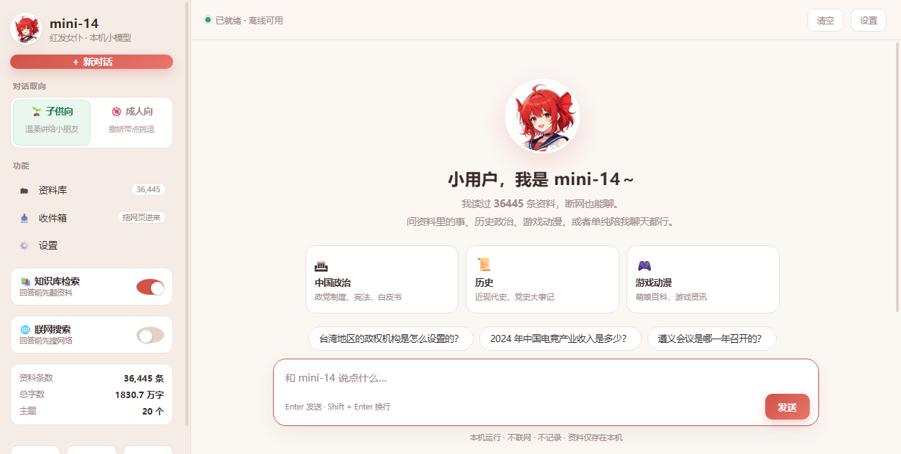

v1.1 · 新增联网搜索、简繁切换、数据库按需下载
一个完全离线的本地 AI 助手：小模型 + 个人知识库 + 可切换人格。
跑在你自己的电脑上，不上传、不联网、不花钱。

llama.cpp + Vulkan 加速，Qwen2.5-1.5B 量化模型，普通笔记本也能跑。
bge-m3 向量 + BM25 混合检索，支持 3 万条资料、20 个主题。
按主题拆分索引，打开只加载 KB 级 manifest，提问时按语义路由加载命中的分片。
子供向（温柔简单）与成人向（傲娇嘴硬）两套语气与内容边界。
网页拖拽、收件箱、JSONL 批量导入，导入后自动重建索引。
默认所有请求只发往 127.0.0.1，拔掉网线照样聊，数据只在你本机。
一个开关就能让回答前先联网搜资料，关掉即恢复纯离线。
界面与回答一键切换简体 / 繁体，OpenCC 词表保证用词准确。
首次启动可选择是否下载知识库：下载、导入本地包，或跳过只用空库。
git clone https://github.com/nike-cpu/mini-14.git
cd mini-14
# 1) 放入两个 GGUF 模型到 models\
# qwen2.5-1.5b-instruct-q4_k_m.gguf
# bge-m3-Q4_K_M.gguf
# 2) 启动（Windows）
powershell -ExecutionPolicy Bypass -File .\launcher.ps1
# 3) 浏览器打开
# http://127.0.0.1:18014/ 聊天
# http://127.0.0.1:18014/kb.html 资料库云端助手很聪明，但你的笔记、语料、对话都得出门。mini-14 把「检索 + 小模型 + 人格」塞进一台普通电脑， 用 1.5B 的参数、几十毫秒的检索和一套可换的外观，做到够用、够快、够私密。